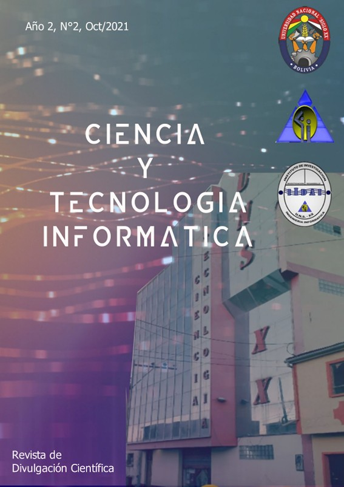
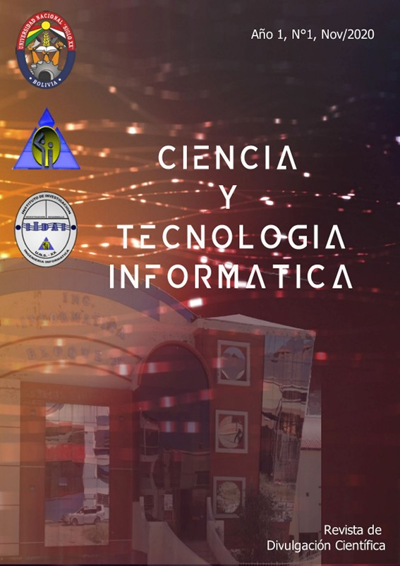

La carrera Ingeniería Informática de la Universidad Nacional “Siglo XX”, a través del Instituto de Investigación y Desarrollo de Aplicaciones Informáticas IIDAI, se complace gratamente en presentar la Revista Científica “Ciencia y Tecnología Informática”, conside rando altamente necesario incursionar en la escritura y divulgación de la literatura científi ca de la carrera Ingeniería Informática.
La revista “Ciencia y Tecnología Informática” ofrece a investigadores, docen
tes, estudiantes y público en general, investigaciones en el área de la Informática
traducidas en artículos científicos y artículos de revisión académica, constituyéndose
en una revista de publicación con periodicidad anual, esperando que sirva de referencia y
contribuyan a las distintas investigaciones y estudios que se desarrollen siempre buscando
el avance de la Ciencia y Tecnología Informática, así como la contribución hacia la sociedad.
La Revista se encuentran en formato digital en el sistema abierto Open Journal System (OJS).
Revista Ciencia y Tecnología Informática
ISSN versión Digital: 3078-2457
ISSN versión Impresa: 3078-2449
Deposito Legal: 7-3-376-2021
disponible en: https://rcti.informatica-unsxx.net/



"Los contenidos de cada articulo son propiedad y responsabilidad de sus respectivos autores"